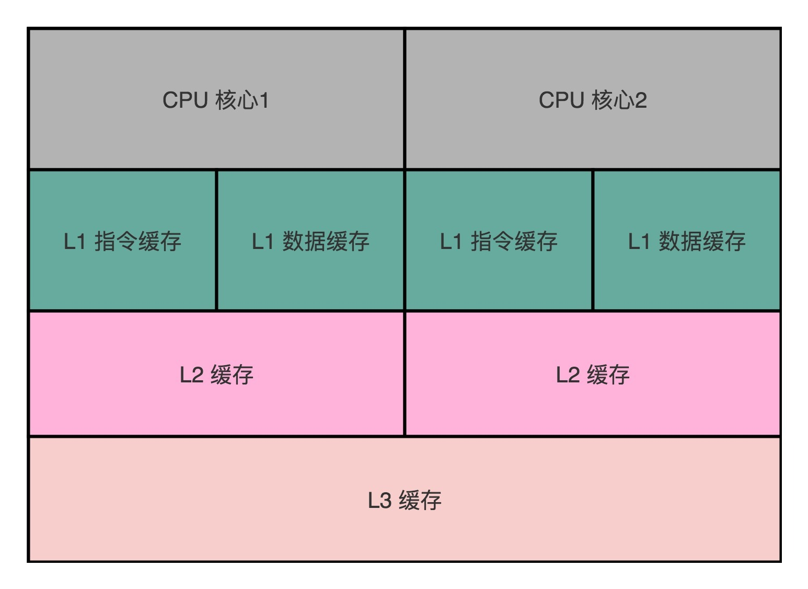
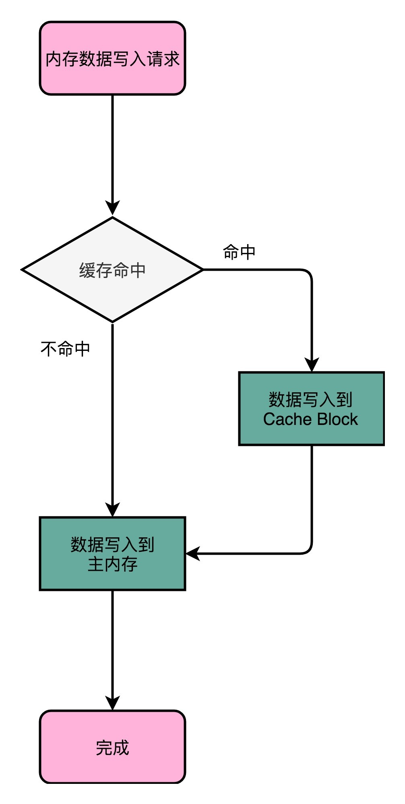
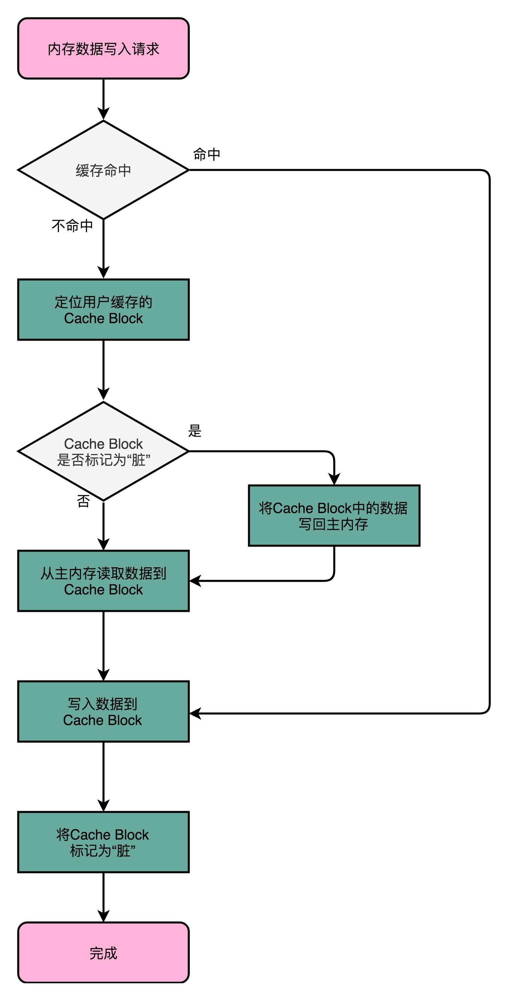

- 00 开篇词 为什么你需要学习计算机组成原理？.md.html
- 01 冯·诺依曼体系结构：计算机组成的金字塔.md.html
- 02 给你一张知识地图，计算机组成原理应该这么学.md.html
- 03 通过你的CPU主频，我们来谈谈“性能”究竟是什么？.md.html
- 04 穿越功耗墙，我们该从哪些方面提升“性能”？.md.html
- 05 计算机指令：让我们试试用纸带编程.md.html
- 06 指令跳转：原来if...else就是goto.md.html
- 07 函数调用：为什么会发生stack overflow？.md.html
- 08 ELF和静态链接：为什么程序无法同时在Linux和Windows下运行？.md.html
- 09 程序装载：“640K内存”真的不够用么？.md.html
- 10 动态链接：程序内部的“共享单车”.md.html
- 11 二进制编码：“手持两把锟斤拷，口中疾呼烫烫烫”？.md.html
- 12 理解电路：从电报机到门电路，我们如何做到“千里传信”？.md.html
- 13 加法器：如何像搭乐高一样搭电路（上）？.md.html
- 14 乘法器：如何像搭乐高一样搭电路（下）？.md.html
- 15 浮点数和定点数（上）：怎么用有限的Bit表示尽可能多的信息？.md.html
- 16 浮点数和定点数（下）：深入理解浮点数到底有什么用？.md.html
- 17 建立数据通路（上）：指令加运算=CPU.md.html
- 18 建立数据通路（中）：指令加运算=CPU.md.html
- 19 建立数据通路（下）：指令加运算=CPU.md.html
- 20 面向流水线的指令设计（上）：一心多用的现代CPU.md.html
- 21 面向流水线的指令设计（下）：奔腾4是怎么失败的？.md.html
- 22 冒险和预测（一）：hazard是“危”也是“机”.md.html
- 23 冒险和预测（二）：流水线里的接力赛.md.html
- 24 冒险和预测（三）：CPU里的“线程池”.md.html
- 25 冒险和预测（四）：今天下雨了，明天还会下雨么？.md.html
- 26 Superscalar和VLIW：如何让CPU的吞吐率超过1？.md.html
- 27 SIMD：如何加速矩阵乘法？.md.html
- 28 异常和中断：程序出错了怎么办？.md.html
- 29 CISC和RISC：为什么手机芯片都是ARM？.md.html
- 30 GPU（上）：为什么玩游戏需要使用GPU？.md.html
- 31 GPU（下）：为什么深度学习需要使用GPU？.md.html
- 32 FPGA、ASIC和TPU（上）：计算机体系结构的黄金时代.md.html
- 33 解读TPU：设计和拆解一块ASIC芯片.md.html
- 34 理解虚拟机：你在云上拿到的计算机是什么样的？.md.html
- 35 存储器层次结构全景：数据存储的大金字塔长什么样？.md.html
- 36 局部性原理：数据库性能跟不上，加个缓存就好了？.md.html
- 37 理解CPU Cache（上）：“4毫秒”究竟值多少钱？.md.html
- 38 高速缓存（下）：你确定你的数据更新了么？.md.html
- 39 MESI协议：如何让多核CPU的高速缓存保持一致？.md.html
- 40 理解内存（上）：虚拟内存和内存保护是什么？.md.html
- 41 理解内存（下）：解析TLB和内存保护.md.html
- 42 总线：计算机内部的高速公路.md.html
- 43 输入输出设备：我们并不是只能用灯泡显示“0”和“1”.md.html
- 44 理解IO_WAIT：IO性能到底是怎么回事儿？.md.html
- 45 机械硬盘：Google早期用过的“黑科技”.md.html
- 46 SSD硬盘（上）：如何完成性能优化的KPI？.md.html
- 47 SSD硬盘（下）：如何完成性能优化的KPI？.md.html
- 48 DMA：为什么Kafka这么快？.md.html
- 49 数据完整性（上）：硬件坏了怎么办？.md.html
- 50 数据完整性（下）：如何还原犯罪现场？.md.html
- 51 分布式计算：如果所有人的大脑都联网会怎样？.md.html
- 52 设计大型DMP系统（上）：MongoDB并不是什么灵丹妙药.md.html
- 53 设计大型DMP系统（下）：SSD拯救了所有的DBA.md.html
- 54 理解Disruptor（上）：带你体会CPU高速缓存的风驰电掣.md.html
- 55 理解Disruptor（下）：不需要换挡和踩刹车的CPU，有多快？.md.html
- 结束语 知也无涯，愿你也享受发现的乐趣.md.html
38 高速缓存（下）：你确定你的数据更新了么？
在我工作的十几年里，写了很多 Java 的程序。同时，我也面试过大量的 Java 工程师。对于一些表示自己深入了解和擅长多线程的同学，我经常会问这样一个面试题：“volatile 这个关键字有什么作用？”如果你或者你的朋友写过 Java 程序，不妨来一起试着回答一下这个问题。
就我面试过的工程师而言，即使是工作了多年的 Java 工程师，也很少有人能准确说出 volatile 这个关键字的含义。这里面最常见的理解错误有两个，一个是把 volatile 当成一种锁机制，认为给变量加上了 volatile，就好像是给函数加了 sychronized 关键字一样，不同的线程对于特定变量的访问会去加锁；另一个是把 volatile 当成一种原子化的操作机制，认为加了 volatile 之后，对于一个变量的自增的操作就会变成原子性的了。
// 一种错误的理解，是把 volatile 关键词，当成是一个锁，可以把 long/double 这样的数的操作自动加锁
private volatile long synchronizedValue = 0;
// 另一种错误的理解，是把 volatile 关键词，当成可以让整数自增的操作也变成原子性的
private volatile int atomicInt = 0;
amoticInt++;
事实上，这两种理解都是完全错误的。很多工程师容易把 volatile 关键字，当成和锁或者数据数据原子性相关的知识点。而实际上，volatile 关键字的最核心知识点，要关系到 Java 内存模型（JMM，Java Memory Model）上。
虽然 JMM 只是 Java 虚拟机这个进程级虚拟机里的一个内存模型，但是这个内存模型，和计算机组成里的 CPU、高速缓存和主内存组合在一起的硬件体系非常相似。理解了 JMM，可以让你很容易理解计算机组成里 CPU、高速缓存和主内存之间的关系。
“隐身”的变量
我们先来一起看一段 Java 程序。这是一段经典的 volatile 代码，来自知名的 Java 开发者网站dzone.com，后续我们会修改这段代码来进行各种小实验。
public class VolatileTest {
private static volatile int COUNTER = 0;
public static void main(String[] args) {
new ChangeListener().start();
new ChangeMaker().start();
}
static class ChangeListener extends Thread {
@Override
public void run() {
int threadValue = COUNTER;
while ( threadValue < 5){
if( threadValue!= COUNTER){
System.out.println("Got Change for COUNTER : " + COUNTER + "");
threadValue= COUNTER;
}
}
}
}
static class ChangeMaker extends Thread{
@Override
public void run() {
int threadValue = COUNTER;
while (COUNTER <5){
System.out.println("Incrementing COUNTER to : " + (threadValue+1) + "");
COUNTER = ++threadValue;
try {
Thread.sleep(500);
} catch (InterruptedException e) { e.printStackTrace(); }
}
}
}
}
我们先来看看这个程序做了什么。在这个程序里，我们先定义了一个 volatile 的 int 类型的变量，COUNTER。
然后，我们分别启动了两个单独的线程，一个线程我们叫 ChangeListener。另一个线程，我们叫 ChangeMaker。
ChangeListener 这个线程运行的任务很简单。它先取到 COUNTER 当前的值，然后一直监听着这个 COUNTER 的值。一旦 COUNTER 的值发生了变化，就把新的值通过 println 打印出来。直到 COUNTER 的值达到 5 为止。这个监听的过程，通过一个永不停歇的 while 循环的忙等待来实现。
ChangeMaker 这个线程运行的任务同样很简单。它同样是取到 COUNTER 的值，在 COUNTER 小于 5 的时候，每隔 500 毫秒，就让 COUNTER 自增 1。在自增之前，通过 println 方法把自增后的值打印出来。
最后，在 main 函数里，我们分别启动这两个线程，来看一看这个程序的执行情况。程序的输出结果并不让人意外。ChangeMaker 函数会一次一次将 COUNTER 从 0 增加到 5。因为这个自增是每 500 毫秒一次，而 ChangeListener 去监听 COUNTER 是忙等待的，所以每一次自增都会被 ChangeListener 监听到，然后对应的结果就会被打印出来。
Incrementing COUNTER to : 1
Got Change for COUNTER : 1
Incrementing COUNTER to : 2
Got Change for COUNTER : 2
Incrementing COUNTER to : 3
Got Change for COUNTER : 3
Incrementing COUNTER to : 4
Got Change for COUNTER : 4
Incrementing COUNTER to : 5
Got Change for COUNTER : 5
这个时候，我们就可以来做一个很有意思的实验。如果我们把上面的程序小小地修改一行代码，把我们定义 COUNTER 这个变量的时候，设置的 volatile 关键字给去掉，会发生什么事情呢？你可以自己先试一试，看结果是否会让你大吃一惊。
private static int COUNTER = 0;
复制代码
没错，你会发现，我们的 ChangeMaker 还是能正常工作的，每隔 500ms 仍然能够对 COUNTER 自增 1。但是，奇怪的事情在 ChangeListener 上发生了，我们的 ChangeListener 不再工作了。在 ChangeListener 眼里，它似乎一直觉得 COUNTER 的值还是一开始的 0。似乎 COUNTER 的变化，对于我们的 ChangeListener 彻底“隐身”了。
Incrementing COUNTER to : 1
Incrementing COUNTER to : 2
Incrementing COUNTER to : 3
Incrementing COUNTER to : 4
Incrementing COUNTER to : 5
这个有意思的小程序还没有结束，我们可以再对程序做一些小小的修改。我们不再让 ChangeListener 进行完全的忙等待，而是在 while 循环里面，小小地等待上 5 毫秒，看看会发生什么情况。
static class ChangeListener extends Thread {
@Override
public void run() {
int threadValue = COUNTER;
while ( threadValue < 5){
if( threadValue!= COUNTER){
System.out.println("Sleep 5ms, Got Change for COUNTER : " + COUNTER + "");
threadValue= COUNTER;
}
try {
Thread.sleep(5);
} catch (InterruptedException e) { e.printStackTrace(); }
}
}
}
好了，不知道你有没有自己动手试一试呢？又一个令人惊奇的现象要发生了。虽然我们的 COUNTER 变量，仍然没有设置 volatile 这个关键字，但是我们的 ChangeListener 似乎“睡醒了”。在通过 Thread.sleep(5) 在每个循环里“睡上“5 毫秒之后，ChangeListener 又能够正常取到 COUNTER 的值了。
Incrementing COUNTER to : 1
Sleep 5ms, Got Change for COUNTER : 1
Incrementing COUNTER to : 2
Sleep 5ms, Got Change for COUNTER : 2
Incrementing COUNTER to : 3
Sleep 5ms, Got Change for COUNTER : 3
Incrementing COUNTER to : 4
Sleep 5ms, Got Change for COUNTER : 4
Incrementing COUNTER to : 5
Sleep 5ms, Got Change for COUNTER : 5
这些有意思的现象，其实来自于我们的 Java 内存模型以及关键字 volatile 的含义。**那 volatile 关键字究竟代表什么含义呢？它会确保我们对于这个变量的读取和写入，都一定会同步到主内存里，而不是从 Cache 里面读取。**该怎么理解这个解释呢？我们通过刚才的例子来进行分析。
刚刚第一个使用了 volatile 关键字的例子里，因为所有数据的读和写都来自主内存。那么自然地，我们的 ChangeMaker 和 ChangeListener 之间，看到的 COUNTER 值就是一样的。
到了第二段进行小小修改的时候，我们去掉了 volatile 关键字。这个时候，ChangeListener 又是一个忙等待的循环，它尝试不停地获取 COUNTER 的值，这样就会从当前线程的“Cache”里面获取。于是，这个线程就没有时间从主内存里面同步更新后的 COUNTER 值。这样，它就一直卡死在 COUNTER=0 的死循环上了。
而到了我们再次修改的第三段代码里面，虽然还是没有使用 volatile 关键字，但是短短 5ms 的 Thead.Sleep 给了这个线程喘息之机。既然这个线程没有这么忙了，它也就有机会把最新的数据从主内存同步到自己的高速缓存里面了。于是，ChangeListener 在下一次查看 COUNTER 值的时候，就能看到 ChangeMaker 造成的变化了。
虽然 Java 内存模型是一个隔离了硬件实现的虚拟机内的抽象模型，但是它给了我们一个很好的“缓存同步”问题的示例。也就是说，如果我们的数据，在不同的线程或者 CPU 核里面去更新，因为不同的线程或 CPU 核有着自己各自的缓存，很有可能在 A 线程的更新，到 B 线程里面是看不见的。
CPU 高速缓存的写入
事实上，我们可以把 Java 内存模型和计算机组成里的 CPU 结构对照起来看。
我们现在用的 Intel CPU，通常都是多核的的。每一个 CPU 核里面，都有独立属于自己的 L1、L2 的 Cache，然后再有多个 CPU 核共用的 L3 的 Cache、主内存。
因为 CPU Cache 的访问速度要比主内存快很多，而在 CPU Cache 里面，L1/L2 的 Cache 也要比 L3 的 Cache 快。所以，上一讲我们可以看到，CPU 始终都是尽可能地从 CPU Cache 中去获取数据，而不是每一次都要从主内存里面去读取数据。

这个层级结构，就好像我们在 Java 内存模型里面，每一个线程都有属于自己的线程栈。线程在读取 COUNTER 的数据的时候，其实是从本地的线程栈的 Cache 副本里面读取数据，而不是从主内存里面读取数据。如果我们对于数据仅仅只是读，问题还不大。我们在上一讲里，已经看到 Cache Line 的组成，以及如何从内存里面把对应的数据加载到 Cache 里。
但是，对于数据，我们不光要读，还要去写入修改。这个时候，有两个问题来了。
**第一个问题是，写入 Cache 的性能也比写入主内存要快，那我们写入的数据，到底应该写到 Cache 里还是主内存呢？如果我们直接写入到主内存里，Cache 里的数据是否会失效呢？**为了解决这些疑问，下面我要给你介绍两种写入策略。
写直达（Write-Through）

最简单的一种写入策略，叫作写直达（Write-Through）。在这个策略里，每一次数据都要写入到主内存里面。在写直达的策略里面，写入前，我们会先去判断数据是否已经在 Cache 里面了。如果数据已经在 Cache 里面了，我们先把数据写入更新到 Cache 里面，再写入到主内存里面；如果数据不在 Cache 里，我们就只更新主内存。
写直达的这个策略很直观，但是问题也很明显，那就是这个策略很慢。无论数据是不是在 Cache 里面，我们都需要把数据写到主内存里面。这个方式就有点儿像我们上面用 volatile 关键字，始终都要把数据同步到主内存里面。
写回（Write-Back）

这个时候，我们就想了，既然我们去读数据也是默认从 Cache 里面加载，能否不用把所有的写入都同步到主内存里呢？只写入 CPU Cache 里面是不是可以？
当然是可以的。在 CPU Cache 的写入策略里，还有一种策略就叫作写回（Write-Back）。这个策略里，我们不再是每次都把数据写入到主内存，而是只写到 CPU Cache 里。只有当 CPU Cache 里面的数据要被“替换”的时候，我们才把数据写入到主内存里面去。
写回策略的过程是这样的：如果发现我们要写入的数据，就在 CPU Cache 里面，那么我们就只是更新 CPU Cache 里面的数据。同时，我们会标记 CPU Cache 里的这个 Block 是脏（Dirty）的。所谓脏的，就是指这个时候，我们的 CPU Cache 里面的这个 Block 的数据，和主内存是不一致的。
如果我们发现，我们要写入的数据所对应的 Cache Block 里，放的是别的内存地址的数据，那么我们就要看一看，那个 Cache Block 里面的数据有没有被标记成脏的。如果是脏的话，我们要先把这个 Cache Block 里面的数据，写入到主内存里面。然后，再把当前要写入的数据，写入到 Cache 里，同时把 Cache Block 标记成脏的。如果 Block 里面的数据没有被标记成脏的，那么我们直接把数据写入到 Cache 里面，然后再把 Cache Block 标记成脏的就好了。
在用了写回这个策略之后，我们在加载内存数据到 Cache 里面的时候，也要多出一步同步脏 Cache 的动作。如果加载内存里面的数据到 Cache 的时候，发现 Cache Block 里面有脏标记，我们也要先把 Cache Block 里的数据写回到主内存，才能加载数据覆盖掉 Cache。
可以看到，在写回这个策略里，如果我们大量的操作，都能够命中缓存。那么大部分时间里，我们都不需要读写主内存，自然性能会比写直达的效果好很多。
然而，无论是写回还是写直达，其实都还没有解决我们在上面 volatile 程序示例中遇到的问题，也就是多个线程，或者是多个 CPU 核的缓存一致性的问题。这也就是我们在写入修改缓存后，需要解决的第二个问题。
要解决这个问题，我们需要引入一个新的方法，叫作 MESI 协议。这是一个维护缓存一致性协议。这个协议不仅可以用在 CPU Cache 之间，也可以广泛用于各种需要使用缓存，同时缓存之间需要同步的场景下。今天的内容差不多了，我们放在下一讲，仔细讲解缓存一致性问题。
总结延伸
最后，我们一起来回顾一下这一讲的知识点。通过一个使用 Java 程序中使用 volatile 关键字程序，我们可以看到，在有缓存的情况下会遇到一致性问题。volatile 这个关键字可以保障我们对于数据的读写都会到达主内存。
进一步地，我们可以看到，Java 内存模型和 CPU、CPU Cache 以及主内存的组织结构非常相似。在 CPU Cache 里，对于数据的写入，我们也有写直达和写回这两种解决方案。写直达把所有的数据都直接写入到主内存里面，简单直观，但是性能就会受限于内存的访问速度。而写回则通常只更新缓存，只有在需要把缓存里面的脏数据交换出去的时候，才把数据同步到主内存里。在缓存经常会命中的情况下，性能更好。
但是，除了采用读写都直接访问主内存的办法之外，如何解决缓存一致性的问题，我们还是没有解答。这个问题的解决方案，我们放到下一讲来详细解说。
推荐阅读
如果你是一个 Java 程序员，我推荐你去读一读 Fixing Java Memory Model 这篇文章。读完这些内容，相信你会对 Java 里的内存模型和多线程原理有更深入的了解，并且也能更好地和我们计算机底层的硬件架构联系起来。
对于计算机组成的 CPU 高速缓存的写操作处理，你也可以读一读《计算机组成与设计：硬件 / 软件接口》的 5.3.3 小节。